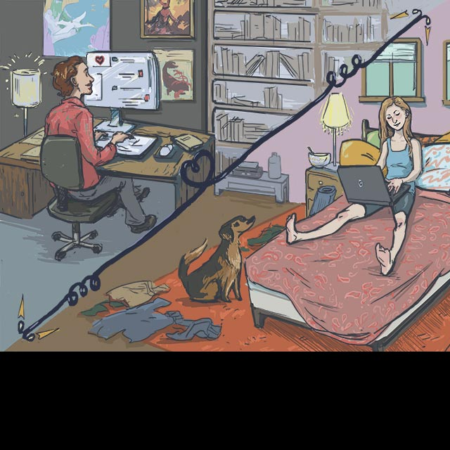
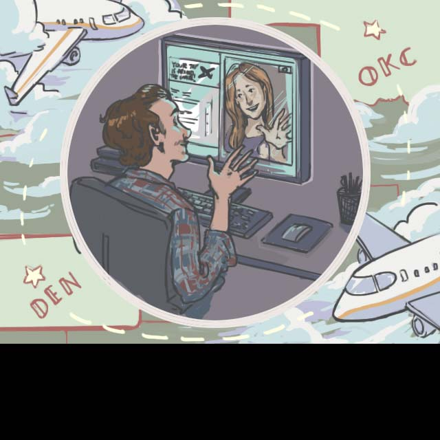
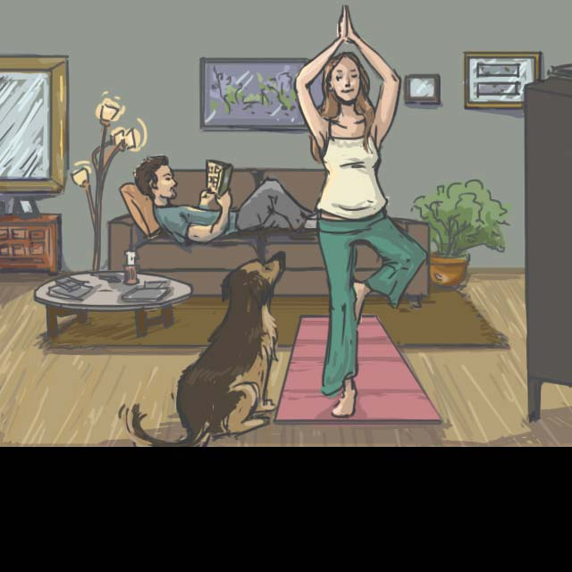
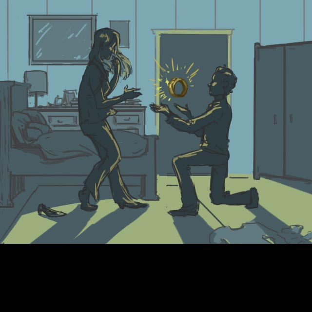

Our Story
- 
- 
- 
- 
Located in downtown Denver, the Marriott's SpringHill Suites provides the perfect hub for our wedding festivities. What we love the most is that the hotel is integrated with the neighboring Metropolitan State Campus of Denver through an innovative partnership with the Department of Hospitality. In fact, some of the money brought in through this hotel funds scholarships for the students who get a hands-on experience by working for the hotel. It's one of 12 hotels across the nation that has such an integrated program. Another fun fact, throughout the hotel you will find amazing works of art created by Metro State students, faculty and alumni.
This is where we'll gather for brunch on Sunday. Wherever you plan to stay, this will be the central location for meeting and transportation.
SpringHill SuitesSituated near the heart of downtown Denver, Centennial Park is a little known gem. So much so it remains locked the majority of the year. That is of course until a lucky bride and groom decide to share their vows among the Versailles-inspired fountains and gardens. It's a surreal venue nestled between the South Platte River, Elitch Gardens and Downtown Denver.
Dress for warm weather and wear comfortable shoes. (Melissa recommends flats, ladies; you're gorgeous just the way you are). We'll be moving the party from a park walking on pavement and grass to a museum with concrete floors. Save your feet! The wedding party will be rather monochromatic in silvers and grays. But for our guests, by all means, wear your favorite colorful party clothes!
This is one of the most unique venues we could have stumbled upon. This museum has an incredible collection that tells the history of locomotives, motorbikes, and bicycles. You'll be able to climb into the largest steam engine ever built and sit behind the wheel of a Model-T for a picture! We just ask that everyone is respectful of the museums collection and stay behind the ropes of the exhibits no matter how tempting or how many homebrews you imbibe.
We'll be gathering for brunch the morning after the wedding for one last hoorah before we part. We need to get a head count of who is interested, so include that on the RSVP above. There will be a hot breakfast buffet served at the SpringHill suites from 9:30am to 11:30. Bring cash or check for the suggested donation of $12 per person.
We don't need lots of stuff, but if you'd like to help us prepare for our journey into the married world, we've selected a few items we would enjoy and created some funds that would help us out. Thank you!
Tremendous thanks to our wonderful friend Julianna Beckert for building this website from scratch for us to share our wedding details with our treasured guests (herself included). Thank you Naomi Paskowitz for your creative genius in drawing us our very own comic strip. To our parents, whose love and never ending support will never go unnoticed, thank you for helping us make this an incredible memory for years to come. To our family and friends who are coming from near and far to celebrate with us, we are so grateful to have you in our lives. We can't wait to see you all!